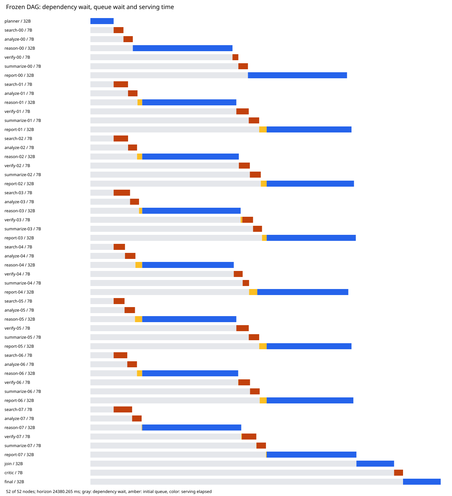

冻结 DAG 与模型池预测
同一冻结请求图上的因果调度预测。时间单位为 ms。
轨迹来源：synthetic_teaching_trace
52-node authored fork/join teaching workload. This is not a captured claudecode trace. 32B/7B names denote declared dense macro geometries. Four 48-GiB devices and 100 TFLOP/s, 800 GB/s are analytical assumptions, not measured W7900D specifications. INT4 effective width 0.515625 includes declared GPTQ-128-like scale metadata; fused dequant and all quantized behavior are assumptions.
Trace SHA256：1012da76e80906009d3b637e8d8dab7f2d1b3668887a6bffa1b6e757845a2559
| 整体状态 | 任务 makespan | 观测 / 排空 elapsed | 节点全部完成 | 资源已排空 |
|---|---|---|---|---|
| COMPLETED | 24,380.265 | 24,380.265 | True | True |
任务 makespan 是全部节点最后输出 token 的最晚时刻；elapsed 包含必要资源排空。未全部完成的任务 makespan 为 —。依赖等待、初次排队与计算后的服务耗时分别记录。
节点 CSV · 设备 CSV · 甘特图 SVG · 离线重放计划

因果时间线

灰色：依赖等待；琥珀色：初次排队；模型颜色：首次计算至请求完成的服务历时。图最多显示 500 个节点，完整节点数据保留在 JSON / CSV 中。
逐卡资源摘要
| 设备 | 模型池 | 副本 | PP stage | TP rank | busy ms | 利用率 | 峰值 KV GiB |
|---|---|---|---|---|---|---|---|
| gpu0 | 32B | 0 | 0 | 0 | 21,956.360 | 90.06% | 1.250 |
| gpu1 | 7B | 0 | 0 | 0 | 4,444.697 | 18.23% | 0.086 |
| gpu2 | 7B | 1 | 0 | 0 | 4,188.226 | 17.18% | 0.107 |
| gpu3 | 7B | 2 | 0 | 0 | 3,220.570 | 13.21% | 0.115 |
利用率是模型组或 PP stage 的 busy 时间除以整个观测 elapsed，不是实测 GPU occupancy。
逐节点摘要
| 节点 | 模型池 | 状态 | ready | 依赖等待 | 初次排队 | 完成 |
|---|---|---|---|---|---|---|
| planner | 32B | COMPLETED | 0.000 | 0.000 | 0.000 | 1,617.061 |
| search-00 | 7B | COMPLETED | 1,617.061 | 1,617.061 | 0.000 | 2,300.542 |
| analyze-00 | 7B | COMPLETED | 2,300.542 | 2,300.542 | 0.000 | 2,952.809 |
| reason-00 | 32B | COMPLETED | 2,952.809 | 2,952.809 | 0.000 | 9,889.390 |
| verify-00 | 7B | COMPLETED | 9,889.390 | 9,889.390 | 0.000 | 10,296.857 |
| summarize-00 | 7B | COMPLETED | 10,296.857 | 10,296.857 | 0.000 | 10,964.449 |
| report-00 | 32B | COMPLETED | 10,964.449 | 10,964.449 | 0.000 | 17,860.466 |
| search-01 | 7B | COMPLETED | 1,617.061 | 1,617.061 | 0.000 | 2,618.636 |
| analyze-01 | 7B | COMPLETED | 2,618.636 | 2,618.636 | 0.000 | 3,277.918 |
| reason-01 | 32B | COMPLETED | 3,277.918 | 3,277.918 | 326.187 | 10,156.383 |
| verify-01 | 7B | COMPLETED | 10,156.383 | 10,156.383 | 0.000 | 11,021.644 |
| summarize-01 | 7B | COMPLETED | 11,021.644 | 11,021.644 | 0.000 | 11,746.978 |
| report-01 | 32B | COMPLETED | 11,746.978 | 11,746.978 | 521.338 | 18,171.793 |
| search-02 | 7B | COMPLETED | 1,617.061 | 1,617.061 | 0.000 | 2,622.046 |
| analyze-02 | 7B | COMPLETED | 2,622.046 | 2,622.046 | 0.000 | 3,247.036 |
| reason-02 | 32B | COMPLETED | 3,247.036 | 3,247.036 | 357.070 | 10,329.484 |
| verify-02 | 7B | COMPLETED | 10,329.484 | 10,329.484 | 3.655 | 11,097.383 |
| summarize-02 | 7B | COMPLETED | 11,097.383 | 11,097.383 | 0.000 | 11,859.967 |
| report-02 | 32B | COMPLETED | 11,859.967 | 11,859.967 | 408.350 | 18,344.895 |
| search-03 | 7B | COMPLETED | 1,617.061 | 1,617.061 | 0.000 | 2,759.529 |
| analyze-03 | 7B | COMPLETED | 2,759.529 | 2,759.529 | 0.000 | 3,384.613 |
| reason-03 | 32B | COMPLETED | 3,384.613 | 3,384.613 | 219.492 | 10,456.860 |
| verify-03 | 7B | COMPLETED | 10,456.860 | 10,456.860 | 115.210 | 11,319.403 |
| summarize-03 | 7B | COMPLETED | 11,319.403 | 11,319.403 | 0.000 | 11,943.884 |
| report-03 | 32B | COMPLETED | 11,943.884 | 11,943.884 | 324.432 | 18,472.270 |
| search-04 | 7B | COMPLETED | 1,617.061 | 1,617.061 | 0.000 | 2,406.605 |
| analyze-04 | 7B | COMPLETED | 2,406.605 | 2,406.605 | 0.000 | 3,133.476 |
| reason-04 | 32B | COMPLETED | 3,133.476 | 3,133.476 | 470.629 | 9,978.975 |
| verify-04 | 7B | COMPLETED | 9,978.975 | 9,978.975 | 0.000 | 10,597.185 |
| summarize-04 | 7B | COMPLETED | 10,597.185 | 10,597.185 | 0.000 | 11,043.461 |
| report-04 | 32B | COMPLETED | 11,043.461 | 11,043.461 | 572.284 | 17,950.043 |
| search-05 | 7B | COMPLETED | 1,617.061 | 1,617.061 | 0.000 | 2,376.031 |
| analyze-05 | 7B | COMPLETED | 2,376.031 | 2,376.031 | 0.000 | 3,103.248 |
| reason-05 | 32B | COMPLETED | 3,103.248 | 3,103.248 | 500.857 | 10,156.383 |
| verify-05 | 7B | COMPLETED | 10,156.383 | 10,156.383 | 0.000 | 11,021.644 |
| summarize-05 | 7B | COMPLETED | 11,021.644 | 11,021.644 | 0.000 | 11,746.978 |
| report-05 | 32B | COMPLETED | 11,746.978 | 11,746.978 | 521.338 | 18,171.793 |
| search-06 | 7B | COMPLETED | 1,617.061 | 1,617.061 | 0.000 | 2,566.243 |
| analyze-06 | 7B | COMPLETED | 2,566.243 | 2,566.243 | 0.000 | 3,241.114 |
| reason-06 | 32B | COMPLETED | 3,241.114 | 3,241.114 | 362.991 | 10,286.486 |
| verify-06 | 7B | COMPLETED | 10,286.486 | 10,286.486 | 10.371 | 11,108.615 |
| summarize-06 | 7B | COMPLETED | 11,108.615 | 11,108.615 | 0.000 | 11,782.449 |
| report-06 | 32B | COMPLETED | 11,782.449 | 11,782.449 | 485.868 | 18,301.897 |
| search-07 | 7B | COMPLETED | 1,617.061 | 1,617.061 | 0.000 | 2,903.293 |
| analyze-07 | 7B | COMPLETED | 2,903.293 | 2,903.293 | 0.000 | 3,565.199 |
| reason-07 | 32B | COMPLETED | 3,565.199 | 3,565.199 | 38.906 | 10,498.943 |
| verify-07 | 7B | COMPLETED | 10,498.943 | 10,498.943 | 38.019 | 11,548.162 |
| summarize-07 | 7B | COMPLETED | 11,548.162 | 11,548.162 | 10.112 | 12,219.063 |
| report-07 | 32B | COMPLETED | 12,219.063 | 12,219.063 | 49.254 | 18,514.354 |
| join | 32B | COMPLETED | 18,514.354 | 18,514.354 | 0.000 | 21,135.984 |
| critic | 7B | COMPLETED | 21,135.984 | 21,135.984 | 0.000 | 21,758.635 |
| final | 32B | COMPLETED | 21,758.635 | 21,758.635 | 0.000 | 24,380.265 |
观测依赖链
planner → search-07 → analyze-07 → reason-07 → verify-07 → summarize-07 → report-07 → join → critic → final
该链包含资源排队与 release 间隙，不是隔离执行成本的理论下界。
模型边界
- model pools own exclusive devices and independent links, host pools and DMA lanes
- dispatch, DAG dependency evaluation and inter-model data transfer have zero modeled latency
- request content and target model are frozen; generated semantic quality is not evaluated
- quantized byte widths are declared analytical assumptions, not quantization kernel validation
- per-device utilization is modeled busy time, not measured GPU occupancy